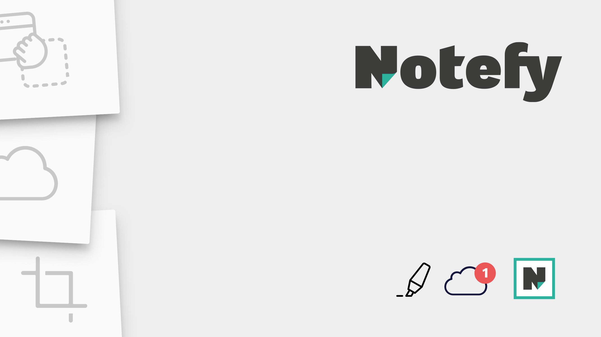

Watch
Um den Fortschritt der Zeit abzubilden, besteht die Minutenangabe diese Uhr aus einzelnen geometrischen Formen, die sich im Laufe der Zeit zu den kompletten Zahlen zusammenfügen. So ist jede Zahl erst vollständig lesbar, wenn die entsprechende Minute komplettiert ist. Um den Aufbau der Zahlen zu verdeutlichen, wurde den einzelnen Bestandteile jeweils leicht unterschiedliche Farbtöne gegeben. Auf diese Weise wird die Unterteilung der Zeit in verschiedene Einheiten auch optisch wahrnehmbar.
Mehr

Notefy
Bei notefy handelt es sich um eine Applikation, die es den Studenten ermöglichgen soll, möglichst effizient ihre Dateien, die sie während des Studiums erhalten, zu organisieren. Dafür sollen Sie diese ganz unkompliziert während dem Unterricht in einer in einer Cloud ablegen können. Zudem sollen Sie direkt an die Unterlagen gekoppelt ihre Notizen erstellen können.
Mehr

Figure it out
Das Knobelspiel für Zahlen-Rätsel-Liebhaber*innen. Erreiche ein Resultat durch addieren und subtrahieren von vier vorgegebenen Zahlen und versuche dabei möglichst wenig Clicks zu machen. Und da man am besten immer mit allem möglichen rechnen sollte gibt es im Laufe des Spiels ausserdem verschiedenste Joker, die deine grauen Zellen immer wieder auf’s neue herausfordern. Das Spiel Figure it out richtet sich an alle, die gerne auf Basis von Additionen und Subtraktionen ihre grauen Zellen trainieren möchten.
Mehr